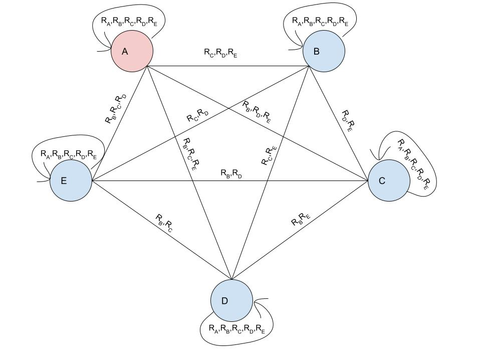

What is Among Us?
In this game, each agent gets assigned a role: either crewmate or imposter. As a crewmate, your objective is to complete tasks to safe the ship. As an imposter, you have to prevent this from happening by killing the crewmates without anyone noticing.
In short, the game exists of two phases: playing and communicating. In the first phase, all agents can walk around a map and perform several actions, such as performing a task to help the ship when you are a crewmate, or killing off a crewmate when you are an imposter. The latter, communication, phase is triggered when a crewmate finds a dead crewmate. In this phase, all agents share their last location and their knowledge about which agents are safe or not. The tricky part here is that the crewmates share this truthfully, but the imposter does not. The crewmates therefore have to figure out who is the corrupt agent by either catching them in the act of killing a crewmate, or catching them in a lie. They also have to reason with the knowledge of the other agents, but they have to watch out not to reason with the false imposter's announcements.
Formalizing Among Us
Action Phase: The action phase consists out of two phases itself: acting and observing. In the first phase, all agents can either move to an adjacent room or perform an action, which is a task if they are crewmate, or kill if they are imposter. They can also choose to perform no action and not move. This phase is repeated until a crewmate runs into a dead body, in which case the agent can report the body at the end of the action phase. This triggers the discussion phase.
Voting Phase: In the voting phase, initially, we plan to model that each agent only votes if they know for sure who the imposter is. Otherwise, they skip the vote. If the majority then votes out the imposter, the crewmates win. We can experiment with the voting behaviour of the impostor and with different voting strategies for the crewmates. For example, agents could vote randomly on agents that they still consider suspicious instead of skipping.
The game can end in three possible ways:
The imposter is voted out by the majority, meaning that the crewmates win.
All crewmates completed all of their assigned tasks, meaning that they win.
Only one crewmate is left, which means the imposter wins.
Kripke Model
Our proposed Kripke model for the overview of the game is relatively simple, as all agents only need to figure out which agent is the imposter. The imposter knows that they are the imposter. Here, all straight lines represent bidirectional arrows.
Knowledge Types
There are however types of knowledge that can be learned throughout the game. Here, a1 and a2 $\in$ set of agents A, x1 and x2$\in$ set of rooms X and y $\in$ set of timesteps Y. These are types of knowledge that can be gained by any crewmate while in the action-phase:
- The location of an agent (both itself and other agents). For example, a1 is in room x1 at time y.
- Whether an agent performed a visual task. For example, a1 performed a visual task in room x1 at time y.
For both of these types of knowledge to be gained, it is important that a crewmate a1 is in the same room as agent a2 (where a1 ≠ a2) at the same time. In the discussion phase, all agents encounter two other possible knowledge types:
- Whether an agent is dead or alive. For example, a1 is alive at time y.
- Announcements of location. For example, a1 announces that they were in room x at time y.
With these different types of knowledge, a crewmate can then reason about the final type of knowledge. Namely, whether another agent is an imposter or not.
Reasoning Rules
There are several rules a crewmate (here a1) can use to deduct this final important type of knowledge. They are listed as follows:
- Catching the imposter in the act: (a1 is in the same room x1 as a2 at step y $\land$ a3 is dead) $\rightarrow$ a1 knows a2 is the imposter.
- Catching the imposter in a lie: (a1 is in the same room x1 as a2 at time y $\land$ a2 announces they were at room x2 (x2 ≠ x1) at y) $\rightarrow$ a1 knows a2 is the imposter.
- Clearing a crewmate by seeing their task: (a1 is in the same room x1 as a2 at step y $\land$ a2 performed a visual task in room x1 at step y) $\rightarrow$ a1 knows a2 is a crewmate.
- Dead agents must be crewmates: a1 is dead $\rightarrow$ all a know that a1 a crewmate.
To model the real game, the imposter will have a cooldown of a set number of rounds on their kill-action. When it is capable of killing a crewmate, this action is stochastic. This means that simply being in the same room as another agent without getting killed does not mean that they are a crewmate. In our initial knowledge model, the imposter does not yet reason about what the other agents know. We do plan to explore this using higher-order knowledge once the initial project is up and running.
We also still want to explore the concept of lying for the imposter. This way, the imposter could lie about their last location in case this location was the kill site. We have not implemented or researched this yet.
Techincal Details
We have implemented most of the game mechanics and a simple gui in PyGame, and our code can be found in this repository: https://github.com/MaxVinValk/AmongUsLAMAS. The agents follow a hard-coded strategy in our implementation, apart from the voting phase. Our next step is to extend the implementation with Kripke models. We use https://github.com/erohkohl/mlsolver to implement our Kripke model. For now, the model is still simple and only contains knowledge about which agent is the imposter. Later, we will try to extend this Kripke model as described in the next section.
Extended Knowledge Model: Movement between Rooms
In the basic knowledge model, when a crewmate learns someone was in a room he will take this into consideration, but will not use the movement rules to infer where that person could be in the previous or next step. This information is often relevant, for example when a_1 sees a_2 at the left of the map, and in the next time step a_3 is killed at the right end of the map, this means a_1 can infer that a_2 cannot be the killer because he cannot have traveled across the map that quickly. We have thought about ways to extend our approach to make this kind of inference possible, which we might implement and compare if we have the time.
It is not feasible to construct a single Kripke model encoding the location of all agents at all time steps due to the curse of dimensionality. An alternative is to construct a set of disconnected models representing knowledge about subsets of the propositions about the game world. A reasonable simplification might be to construct one Kripke model for every combination of time step and agent (so for example in a game with 5 agents where 10 time steps have passed, there would be 50 such models). The location model for agent a_i at time t will be denoted M^\mathsf{loc}_{a_i,t} and has the following propositional atoms:
P^\mathsf{loc}_{a_i,t} = \{\mathsf{room}_{a_i;r;t} | r \in R\} \cup \{ \mathsf{imp}_a | a \in A\}, where \mathsf{room}_{a_i;r;t} indicates a_i was in room r at time t and \mathsf{imp}_a indicates agent a is the impostor.
We know that there is exactly one impostor in the game and that an agent is in one room at any time. Therefore, the states in a location model consist of one \mathsf{room} proposition and one \mathsf{imp} proposition. Initially, accessibility relations are those for a distributed system (agents know their own location and impostor status, but not those of others). So initially, it holds that i \neq j \Leftrightarrow M^\mathsf{loc}_{a,t} \vDash \neg K_i \mathsf{imp}_j \land \neg K_i \neg \mathsf{imp}_j unless a_i is the impostor (which means he knows the impostor status of all agents).
Now the types of knowledge obtained by the agents during the game can be translated into announcements for the location models. This will restrict the accessibility relations, and at some point some agents may acquire knowledge that someone is or is not the impostor and use this to inform their voting. A sketch of how these announcements could work is the following (announcements are made only to the agent that learn that information, which we could model with an epistemic action model):
Learning agent a is in room r at time t: In the location model M^\mathsf{loc}_{a,t} this is translated as the announcement of proposition \mathsf{room}_{a;r;t}. We can also translate this announcement to other time steps, by using the connectivity between the rooms. For example we know that in the previous time step, agent a was in a room from which r was reachable, so in model M^\mathsf{loc}_{a,t-1} we can announce for all rooms r^\prime that are not connected to r that \neg\mathsf{room}_{a;r^\prime;t-1} (meaning agent a was certainly not in any of those rooms). In this way the observation can be translated to the location models of agent a for all time steps.
In the discussion phase, an agent a announces the location of an agent at some time: We can exclude all states that contradict the announced location and where a is not the impostor (because only the impostor can lie). We can again use the connectivity to translate this announcement to other time steps.
Visual task is observed of some agent a: We can announce to the observing agent that \neg \mathsf{imp}_a.
This needs to be worked out more carefully, but it would be interesting to see how much of an advantage the agents would get by adding this type of reasoning. The combined size of the models is much larger than the basic knowledge model, but seems like it should be manageable if implemented efficiently. If we choose to implement it this model can also easily be extended for the venting mechanic where the impostor can take shortcuts, to allow crewmates to notice the impostor moved too quickly.
It would be interesting to know if there is a more elegant way to deal with this kind of knowledge that creating a set of separate Kripke models.